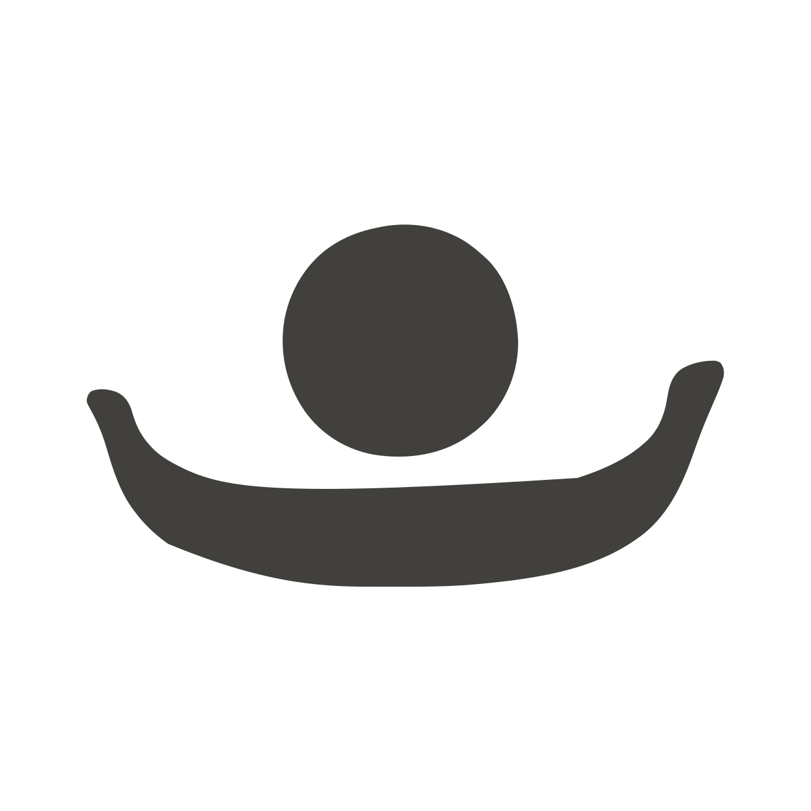

01 / Interface
UI—COPY—CODE—FIGMA
界面还原，
逐项校对。
保留 Figma 分组和原始资产，把字体、间距与布局带入 SwiftUI，再用模拟器截图比对。
- 输入Figma 节点 / 现有界面
- 交付界面代码 / 截图校验
Figma → SwiftUI工作流程示意
01 / MEASURE按分组测量
02 / EXPORT导出原始资产
03 / BUILD校正字体与布局
04 / COMPARE截图比对

BinG / Design tools03 Skills · 2026
从数独与 arright 的设计实践中，
整理三个可以复用的工作流。
01 / Interface
UI—COPY—CODE—FIGMA
保留 Figma 分组和原始资产，把字体、间距与布局带入 SwiftUI，再用模拟器截图比对。
01 / MEASURE按分组测量
02 / EXPORT导出原始资产
03 / BUILD校正字体与布局
04 / COMPARE截图比对
02 / Handcut
handcut-solid-icons
用灰色实心块面建立图标语言，保留轻微歪扭和不对称，再描摹成可编辑的 SVG。

03 / Newsprint
sudoku-image-style
铜版画排线与老报纸压印，保留缺墨、飞白和毛边；把生成、检查、去底与矢量化串成流程。

每个 Skill 都可以单独取用。
下载三个 Skills